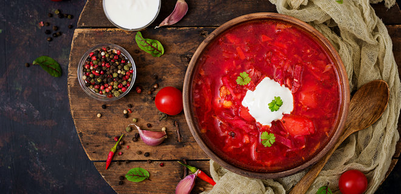
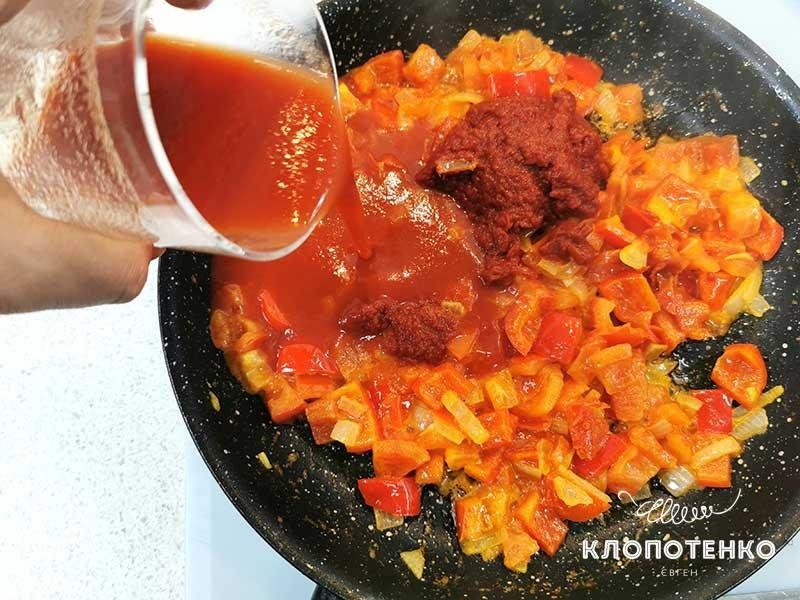
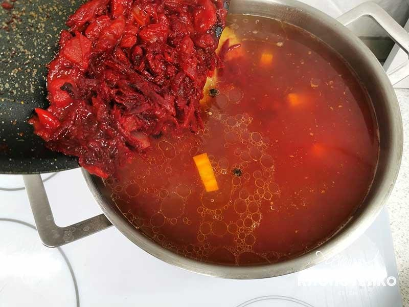
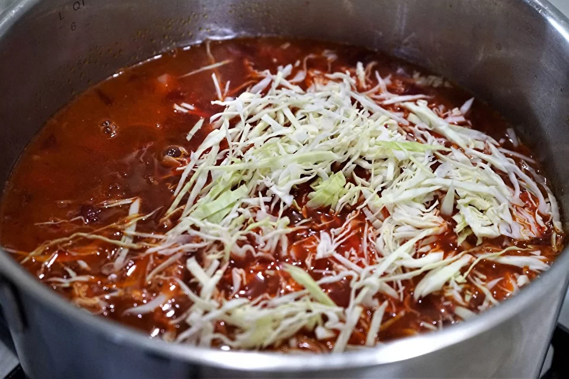

Про борщ я можу розповідати годинами. Ні для кого не секрет, що майже у кожній родині існує свій особливий рецепт борщу. Хтось не уявляє борщ без квасолі, а хтось готує його без капусти. Всі ці варіанти мають право на існування, бо немає якогось «правильного» рецепта, просто у кожного є свій сімейний борщ. Ми вже готували гетьманський борщ та пісний борщ Полісся, а зараз приготуємо український борщ на свинячих ребрах – надзвичайно ароматний та смачний. У цій страві живе українська душа, і я дуже хочу, аби ви це відчули.
ЯК ПРИГОТУВАТИ УКРАЇНСЬКИЙ БОРЩ НА СВИНЯЧИХ РЕБРАХ
ІНГРЕДІЄНТИ
- 400-500 гр. свинячих ребер
- 2 шт. буряка
- 2 шт. томатів
- ¼ шт. кореня селери
- ¼ качана капусти
- 3-4 шт. картоплини
- 1-2 шт. моркви
- 1 шт. цибулі
- 1-2 шт. груші (копченої)
- 2 шт. лаврового листа
- 3 горошини духмяного перцю
- 1 головка часнику
- 1 шт. солодкого перцю
- 200 мл. томатного соку
- 30 гр. вершкового масла
- 2 ст. л. томатної пасти
- 3 л. води
- за смаком сіль
УКРАЇНСЬКИЙ БОРЩ НА СВИНЯЧИХ РЕБРАХ: ПОКРОКОВИЙ РЕЦЕПТ
- Розігрійте духовку до 200 градусів та запікайте свинячі ребра протягом 30 хвилин до золотавої скоринки. Корінь селери (¼ шт.) промийте та наріжте довільними шматками, чистити його не треба. Моркву (1-2 шт.) поріжте такими ж шматками, як і селеру. Запечені ребра перекладіть до каструлі та залийте 3 літрами води, додайте порізані селеру та моркву і половину нечищеної цибулини, доведіть до кипіння та варіть на середньому вогні 30 хвилин.
- Приготуйте засмажку – це серце будь-якого борщу. Солодкий перець (1 шт.) поріжте невеличким кубиком, томати (2 шт.) та цибулю (другу половину) поріжте дрібним кубиком.
- Обсмажте овочі на пательні з 30 г вершкового масла, поки вони не стануть м’якими. Додайте 200 мл томатного соку та 2 ст. л. томатної пасти, тушкуйте ще 5-7 хвилин. 
- Потім додайте один буряк, тертий на крупній терці, тушкуйте ще 3-4 хвилини.
- З іншого буряка вичавіть сік на соковижималці або просто натріть буряк на дрібну терку. Додайте буряк у каструлю, а разом з ним 3 горошини духмяного перцю, 2 лаврових листа і сіль за смаком.
- Наріжте 3-4 картоплини зручними кубиками та покладіть у каструлю.
- Перекладіть готову засмажку до каструлі з бульйоном. Головку часнику розріжте навпіл та додайте до каструлі з борщем.
- Капусту (¼ качана) нашаткуйте та відставте – її ми будемо додавати до борщу наприкінці приготування.
- За бажанням можна додати до борщу консервовану квасолю за смаком.
- Додайте копчені або в’ялені груші (1-2 шт.). Вони нададуть вашому борщу приємного смаку димку.
- Наприкінці приготування додайте до каструлі нашатковану капусту та через 5 хвилин зніміть борщ з плити. Дайте йому настоятись щонайменше 30 хвилин. Подавайте борщ зі сметаною та подрібненою зеленню кропу. Зберігайте борщ у холодильнику та пам’ятайте, що найкраще борщ смакує на другий день.